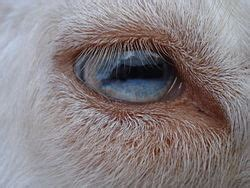

Physical features & behavior
Toy goats have become a pet, just as dogs or cats. Except that it is actually more useful for your garden. The goat is going to clear your garden of brambles, woody plants and bushes, even nettle (once dried)!
They are born from a breeding between the smallest goat races, mostly originating in Senegal and Tibet, where the living conditions are tough. The dwarf goat is part of the Bovidae family, and the subfamily Caprinae, just like other goats and sheeps.
It is a very rustic and hardy animal with a life expectancy from 10 to 15 years. They can weight between 15 and 30kg and their sizes varies from 42cm at withers for the "toy" or "extra-toy" labelled goats, and up to 50cm at withers for the "dwarf" or "extra dwarf" labelled goats.
You may have noticed that dwarf goats (and goats in general) have rectangular pupils! Weird, no? Several reasons to that:
- Thanks to this shaped pupil, they have a panorama vision. In the wild, this helps them spot predators rapidly on a broad range. Even when they are grazing, their vision is aligned on the horizon so they don't get surprised by an unwelcomed visitor...
- Their whole vision field is clear, not like us with rounded pupils. When you focus your eyes on something, the surrounding of that focus point is blurred, right? Not them! When running away from predators, they are able to have a clear vision of the ground and what's ahead.
Pretty neat eh??